Teoría de grafos
Apuntes
Índice
- 1. Grafos y Multigrafos
- 2. Grado de un véritce
- 3. Grafos isomorfos
- 4. Grafos homeomorfos
- 5. Caminos y conectividad
- 6. Distancia y diámetro
- 7. Grafos completos
- 8. Grafos Hamiltonianos en grafos completos
- 9. Representación de grafos ponderados con matrices de adyadencia
- 10. Ejecución del algoritmo del vecino más próximo
- 11. Árboles
- 12. Bosques
- 13. Árbol de expansión
- 14. Algoritmo de expancion minima (Kruskal)
- 15. Algoritmo de Kurskal inverso
- 16. Ejemplo de la ejecución del algoritmo Kurskal inverso
- 17. Ejemplo de la ejecución del algoritmo Kurskal
1 Grafos y Multigrafos
Un grafo G consta de dos partes: Un conjunto V cuyos elementos se denominan vértices y un conjunto E de pares no ordenados de vértices distintos llamados aristas de G.
La definición formal de un grafo no permite aristas multiples ni lazos, por lo tanto un grafo se define como un multigrafo sin aristas multiples ni lazos. Ejemplos:
Si G1(V,E) es el grafo del inciso a), entonces:
V={A,B,C,D} y E={{A,B},{B,C},{C,D},{A,C},{B,D}}
Si G2(V,E) es el multigrafo del inciso b), entonces:
V={A,B,C,D} y E={{A,C},{B,D},{A,D},{B,C},{B,C} ,{D,D}}
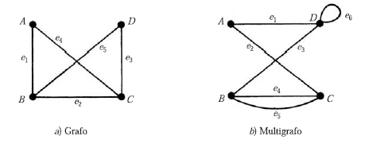
2 Grado de un véritce
El grado de un vértice v en un grafo G, se escribe grd(v), es igual al número de aristas en G que contienen a v. Teorema: La suma de los grados de los vertices de un graf G es igual el doble del número de aristas n en G. Ejemplos:
Si G1(V,E) es el grafo del inciso a), n=5:
V={A,B,C,D} y E={{A,B},{B,C},{C,D},{A,C},{B,D}}
grd(A)=2, grd(B)=3, grd(C)=3, grd(D)=2
2+3+3+2=10
Si G2(V,E) es el multigrafo del inciso b), n=6:
V={A,B,C,D} y E={{A,C},{B,D},{A,D},{B,C},{B,C} ,{D,D}}
grd(A)=2, grd(B)=3, grd(C)=3, grd(D)=4
2+3+3+4=12
3 Grafos isomorfos
Los grafos G y G* son isomorfos si existe una correspondencia f:V->V* tal que {u,v} es una arista de G si y solo si {f(u),f(v)} es una arista de G*.
Ejemplos: Si llamamos a cada uno de los grafos siguientes A, F, K, … podemos encontrar varios pares de grados isomorfos.
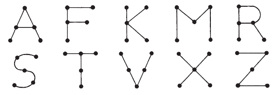
- A y R son isomorfos
- K y X son isomorfos
- M, V, S y Z son isomorfos
4 Grafos homeomorfos
Dado cualquier grafo G, es posible obtener un Nuevo grafo al dividir una arista de G con vertices adicionales. Dos grafos son homeomorfos si es possible obtenerlos a partir del mismo grafo o grafos isomorfos al aplicar este método.
Ejemplos: Los grafos de los incisos a) y b) son homeomorfos puesto que pueden obtenerse a partir del grafo c) al agregar vertices adicionales
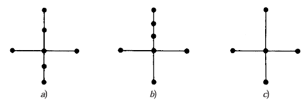
5 Caminos y conectividad
Un camino en un mutigrafo G consta de una secuencia alternada de vertices y aristas de la forma:
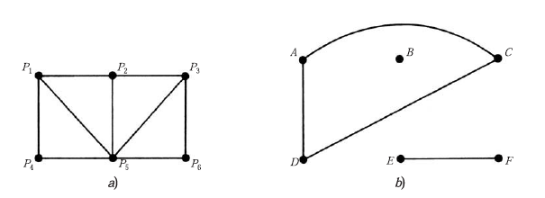
- Recorrido
- es un camino sin aristas repetidas.
- Cerrado
- es un camino cuyo vértice inicial y final coinciden.
- Abierto
- es un camino cuyo vértice inicial y final no coinciden.
- Ciclo
- es un camino simple que además es un camino cerrado.
- Simple
- es un camino sin vértices repetidos, salvo quizás el primero y el último.
- ciclo hamiltoniano
- es un ciclo que pasa por todos los vértices del grafo una única vez (en caso que el vértice inicial y final no coinciden, se suele hablar también de camino hamiltoniano).
- Ciclo Euleriano
- es un ciclo que pasa por todas las aristas del grafo una única vez.
6 Distancia y diámetro
Considere un grafo conexo G, la distancia entre los vertices u y v en G, que se es escribe d(u,v), es la longitude de la ruta más corta entre u y v.
El diámetro de G diam(G) es la distancia máxima entre dos puntos cualesquiera de G.
7 Grafos completos
Un grafo G es completo si cualquier vértice G está unido a todos los demás vértices en G. Por tanto, un grafo completo G debe ser conexo. El grafo completo con n vértices se denomina Kn.
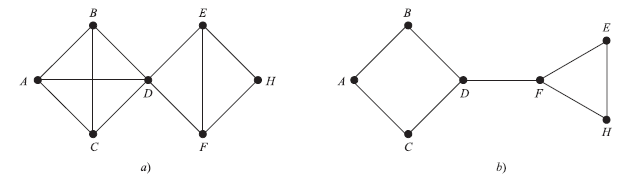
8 Grafos Hamiltonianos en grafos completos
Si un grafo G admite un circuito hamiltoniano, entonces G se denomina grafo hamiltoniano. Un circuito hamiltoniano en un grafo G es un camino cerrado que visita todos los vértices en G exactamente una vez aunque puede repetir aristas.
8.1 Teorema:
Un grafo completo K n con n>=3 vértices tiene \(H=(n-1)!/2\) circuitos hamiltonianos, donde n es el número de vértices del grafo K y no se distingue entre un circuito y su opuesto (es decir, si se invierte el sentido del circuito es el mismo).
9 Representación de grafos ponderados con matrices de adyadencia
- Las matrices de adyacencia representan las conexiones entre nodos de un grafo G.
- Si un grafo es no ponderado, cada elemento de la matriz tendrá un 1 si la conexión entre nodos existe y un 0 en caso contrario.
- Si un grafo es ponderado, cada elemento de la matriz tendrá el peso de la arista si la conexión existe, y se deja vacío si la conexión no existe. Ejemplo:
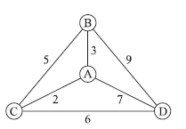
| # | A | B | C | D |
|---|---|---|---|---|
| A | ∞ | 3 | 2 | 7 |
| B | 3 | ∞ | 5 | 9 |
| C | 2 | 5 | ∞ | 6 |
| D | 7 | 9 | 6 | ∞ |
10 Ejecución del algoritmo del vecino más próximo
Este método genera rápidamente un camino Hamiltoniano de peso minimo pero no ideal.
- elección de un vértice arbitrario respecto al vértice actual.
- descubra la arista de menor peso que ya este conectada al vértice actual y a un vértice no visitado V.
- convierta el vértice actual en V.
- marque V como visitado.
- si todos los vértices del dominio estuvieran visitados, cierre el algoritmo.
- vaya al paso 2.
11 Árboles
El árbol es un grafo no dirigido conectado con circuitos no simples; además, no contiene arcos múltiples, con la propiedad de que hay un único camino simple entre cada par de vértices, teniendo el siguiente teorema:
“Un grafo no dirigido es un árbol si y solo si hay un camino simple único entre cualesquiera dos de sus vértices”.
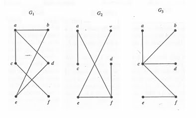
Figura 8: Grafo 1, 2 y 3.
Si se observan los siguientes grafos, se concluye que el grafo G1 no es un árbol porque se observa un circuito simple, pero los grafos G2 Y G3 son de árboles, porque están conectados con circuitos no simples.
12 Bosques
existen grafos que no tienen conexión y podría existir confusión el pensar que un árbol es un grafo conectado que tiene circuitos no simples, pero es importante mencionar que existen árboles del tipo que contienen circuitos no simples que no necesariamente están conectados, y esos árboles reciben el nombre de bosques, cuya característica es que cada uno de sus componentes conectados es un árbol.
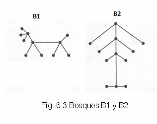
Figura 9: Bosques 1 y 2.
13 Árbol de expansión
un subgrafo se le concidera un arbol de expancion (T) de un grafo (G) si T incluye todos los vertices de G.
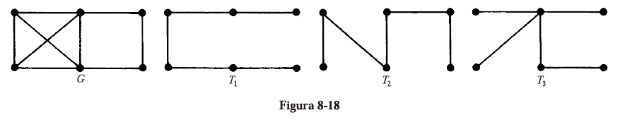
14 Algoritmo de expancion minima (Kruskal)
- Las aristas de G se disponen en orden creciente de peso.
- Se empieza sślo como los vértices de G y en forma secuencial se agrega cada artista que no origine un ciclo hasta que se haya agregado n-1.
- Salir.
15 Algoritmo de Kurskal inverso
- Las aristas de G se disponen en orden decreciente de peso.
- Se procede secuecialmente para eliminar cada arista que no haga inconexo al grafo, hasta que queden n-1 aristas.
- Salir.
16 Ejemplo de la ejecución del algoritmo Kurskal inverso
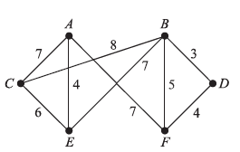
Aquí se aplica el algoritmo 82. Primero se ordenen las aristas en orden decreciente de peso y luego en forma consecutiva se eliminan las aristas sin hacer inco-nexo a Q hasta que queden cinco aristas. Así se obtienen los datos siguientes:
| Aristas | BC | AF | AC | BE | CE | BF | AE | DF | BD |
| Peso | 8 | 7 | 7 | 7 | 6 | 5 | 4 | 4 | 3 |
| Eliminar | si | si | si | no | no | si | nil | nil | nil |
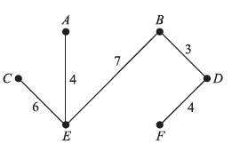
17 Ejemplo de la ejecución del algoritmo Kurskal
Aquí se aplica el algoritmo 8.3. Primero se ordenan las aristas en orden creciente de peso y enseguida se agregan las aristas sin formar ningún ciclo hasta que se incluyen cinco aristas. Asi se obtienen los datos siguientes.
| Aristas | BD | AE | DF | BF | CE | AC | Af | BE | BC |
| Peso | 3 | 4 | 4 | 5 | 6 | 7 | 7 | 7 | 8 |
| Eliminar | si | si | si | no | si | no | si | nil | nil |
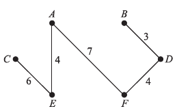